Adding Test Cases to Your Project
For example purposes, we’ll be using files with names and contents as listed below. Please create copies of these files on your local machine as you follow this guide. The files can also be found on GitHub.
IMPORTANT: The .correct files below should end with a blank line.
import unittest
import math_funcs
class MathFuncTestCase(unittest.TestCase):
def test_add(self):
self.assertEqual(11, math_funcs.add(8, 3))
def test_subtract(self):
self.assertEqual(-3, math_funcs.subtract(5, 8))
def test_multiply(self):
self.assertEqual(42, math_funcs.multiply(7, 6))
if __name__ == '__main__':
unittest.main()
def add(first, second):
return first + second
def subtract(first, second):
# Intentional bug
return second - first
def multiply(first, second):
return first * second
word
word
some words that will be printed
some
words
that
will
be
printed
#include <iostream>
#include <string>
using namespace std;
int main() {
// Intentional bug when input has more than one word
string word;
cin >> word;
cout << word << endl;
cin >> word;
while (cin) {
cin >> word;
cout << word << endl;
}
}
def is_palindrome(word):
# intentional bugs:
# - accepts all words with odd length as palindromes
# - is not case-insensitive for palindromes with even length
if len(word) % 2 != 0 or word == word[::-1]:
return True
else:
return False
from is_palindrome import is_palindrome
def test_is_palindrome():
palindromes = [
'abba',
'Abba',
'abcba'
]
not_palindromes = [
'abc',
'ab',
]
# Start with fullpoints and subtract 1 for each incorrect result
score = 5
for word in palindromes:
# we want to make sure that student code doesn't crash the program,
# preventing us from outputting a score (or worse, them outputting their
# own score and then crashing the program)
try:
if not is_palindrome(word):
score -= 1
print("-1: {} is a palindrome,".format(word),
'but is_palindrome("{}") returned False'.format(word))
except:
score -= 1
print("-1: is_palindrome({}) raised an exception".format(word))
for word in not_palindromes:
# we want to make sure that student code doesn't crash the program,
# preventing us from outputting a score (or worse, them outputting their
# own score and then crashing the program)
try:
if is_palindrome(word):
score -= 1
print("-1: {} is not a palindrome,".format(word),
'but is_palindrome("{}") returned True'.format(word))
except:
score -= 1
print('-1: is_palindrome("{}") raised an exception'.format(word))
print("<!! score: {} !!>".format(score))
if __name__ == '__main__':
test_is_palindrome()
Upload Instructor Test Case Files
In the project admin page, click on the “Instructor Files Tab” and then upload the files test_math_funcs.py, test_is_palindrom.py, print_words_test_1.in, print_words_test_1.correct, print_words_test_2.in, print_words_test_2.correct from the previous section.
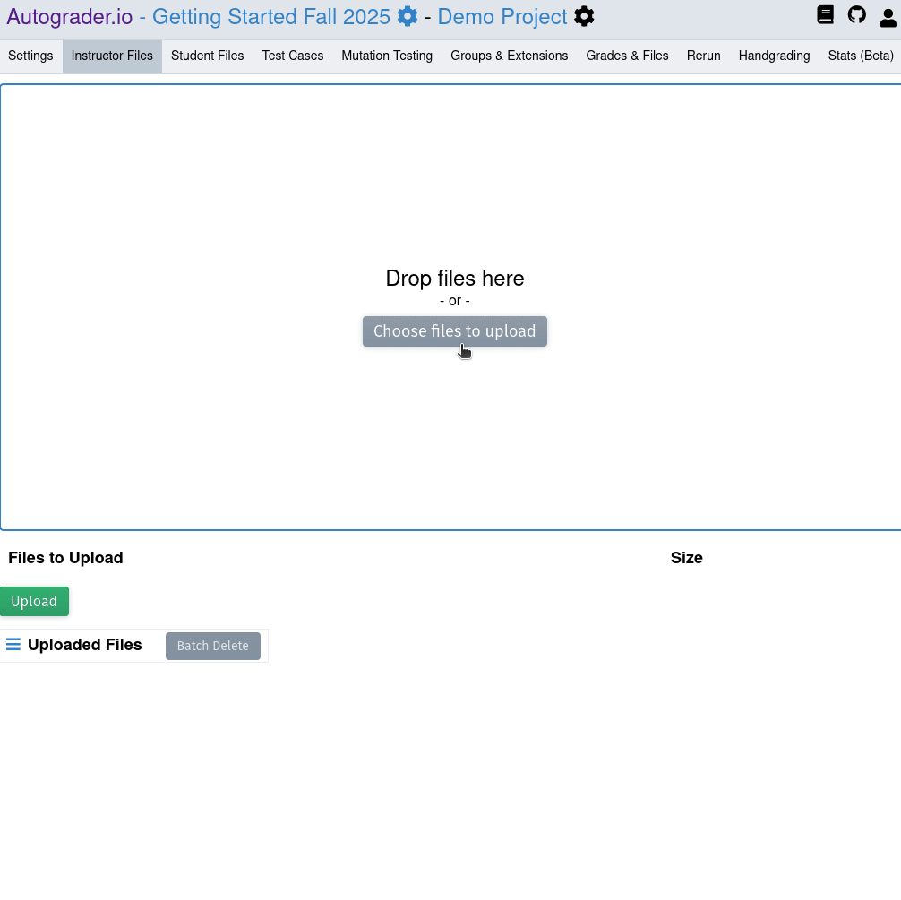
Configure Files Students Should Submit
Click on the “Student Files” tab and add math_funcs.py, is_palindrome.py, and student_solution.cpp as expected student files.
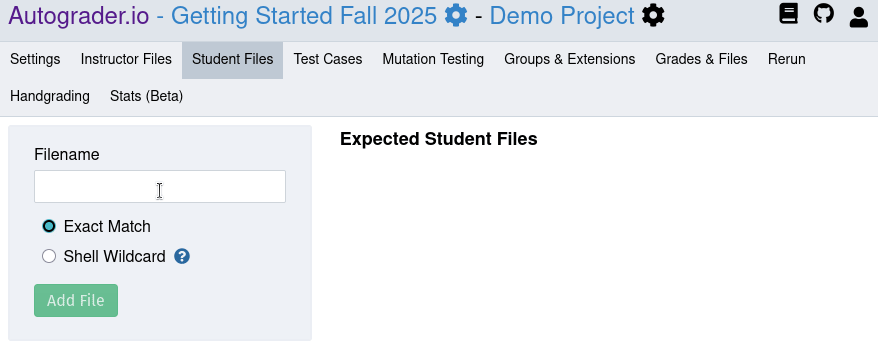
Add Test Cases
Test cases on Autograder.io are organized into suites. When a student submits their code, each suite is run in an isolated environment. Suites also provide a setup step where work required by all the tests in a suite (e.g. compiling source code) can be done just once.
Create a Test Suite with Python Unit Tests
Click on the “Test Cases” tab and then click the “Add Suite” button. In the dialogue that appears, name the suite “Python Tests”.
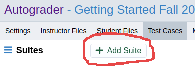
Scroll down to the section labelled “Instructor Files” and select test_math_funcs.py and test_is_palindrom.py from the dropdown. Similarly, select math_funcs.py and is_palindrome.py in the “Student Files” section.
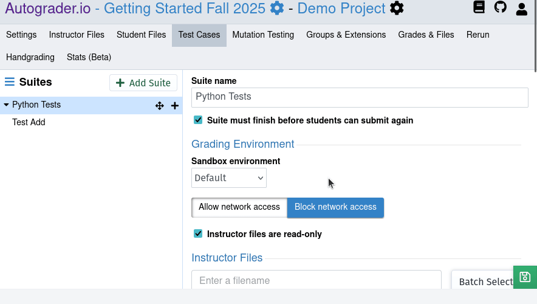
Scroll to the bottom of the page and click the “Save” button. Since we’re using Python, we don’t need to use the “setup” option.
Create the First Test
Next, click the “plus” sign next to the suite name in the sidebar. In the
dialogue that appears, name the test “Test Add” and set its command to
python3 test_math_funcs.py MathFuncTestCase.test_add.
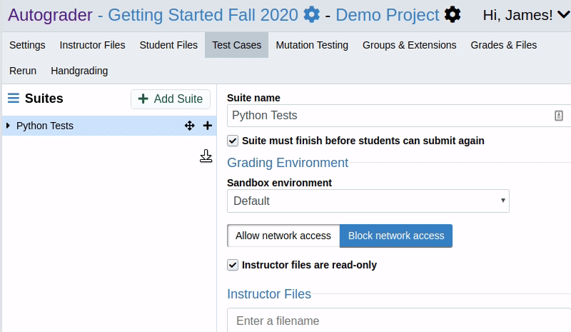
Then, set the following options and click the “save” icon or the “Save” button at the bottom of the page.
Correctness and Scoring -> Return Code -> Expected Return Code: Zero. This tells us that the test is “correct” if the exit status of the program is zero.
Correctness and Scoring -> Return Code -> Correct return code: 2 points. This tells us that the student’s submission will be awarded 2 points for exiting with the correct status (zero in this case).
Feedback -> Normal -> Preset: Pass/Fail. This specifies that students will only see whether their code passed this test. Output is hidden in order to prevent our test cases from being leaked.
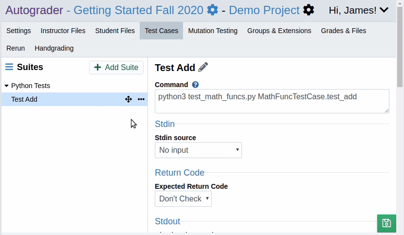
“Test” the Test Case Settings
Before we make any more tests, we should make sure our first one is set up
correctly. Click on the project name at the top of the page to navigate to the
submission page. Drag math_funcs.py into the drop area and click the
“Submit” button. You will see a warning that you didn’t submit all the
expected files, but that’s ok. Click “Submit Anyway”.
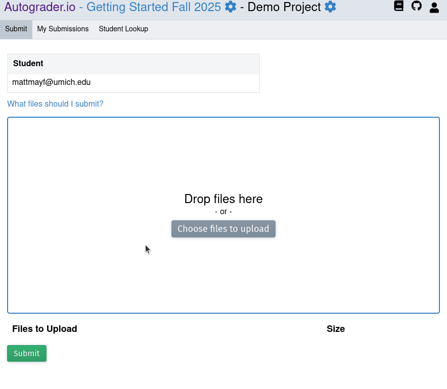
The submission results widget reloads periodically. Since we only have one test, we can use our browser’s refresh button to see the results sooner.
Once the submission is finished grading, we’ll want to see the same feedback students will. Select “Normal” from the “Adjust Feedback” dropdown menu to do so.
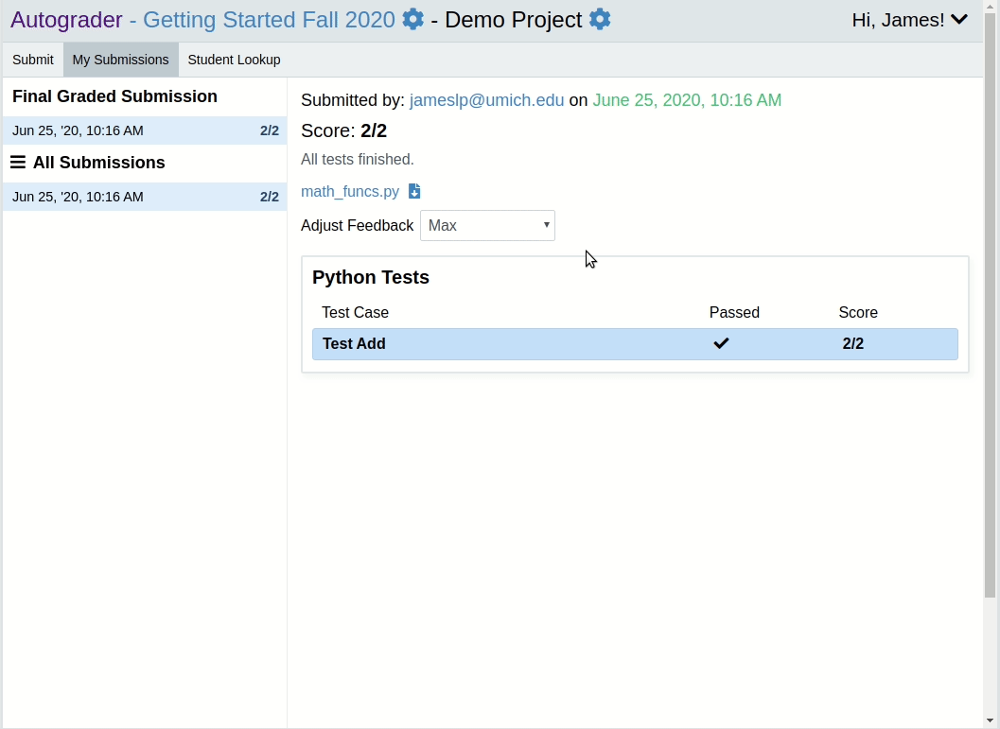
Click on the panel for “Test Add”, and you’ll see that under “Normal” feedback we don’t see any output from the test case. Our first test is good to go!
Clone the Test Case to Create the Rest of the Math Function Tests
Rather than creating the rest of our tests from scratch, we’ll clone the test we made in the previous section and make small changes to the clones. Hover over the … menu in the “Test Add” panel and click on “Clone test case”.
In the dialogue that appears, change the name to “Test Subtract” and then click
the “Clone Test Case” button. Once the test has been cloned, change the last
bit of text in the “Command” text input so that it reads
python3 test_math_funcs.py MathFuncTestCase.test_subtract, then click the
save button. Repeat this process one more time to create “Test Multiply”.
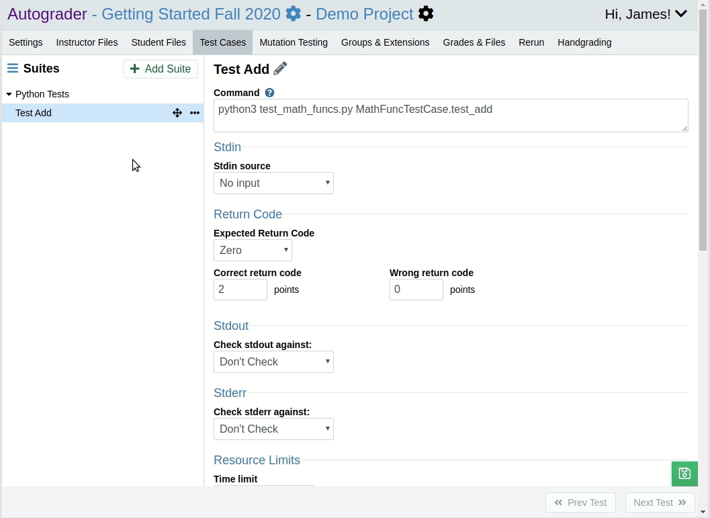
Create One More Python Test Using Custom Scoring
New in version 2025.08.0.
There may be times when you want more control over how many points you assign for a test case. The “Custom Scoring” feature allows your test code to assign points by outputting a specially formatted string to an output stream.
Create a new test case from scratch, naming it “Test Is Palindrome” and set its
command to python3 test_is_palindrome.py. Then, set the following options
and click the “save” icon or the “Save” button at the bottom of the page.
Correctness and Scoring -> Custom Scoring -> Enable custom scoring: checked. This will enable custom scoring, using the default output pattern and parsing the pattern from
stdout.Correctness and Scoring -> Custom Scoring -> Max custom scoring points: 5 points. This specifies that maximum number of points to expect when parsing the score from the output. If a value higher than this is parsed, an error will occur (negative values are allowed, however).
Feedback -> Normal -> Preset: Pass/Fail. When using custom scoring, this specifies that only the number of points assigned will be shown to students and not the actual output of the test command.
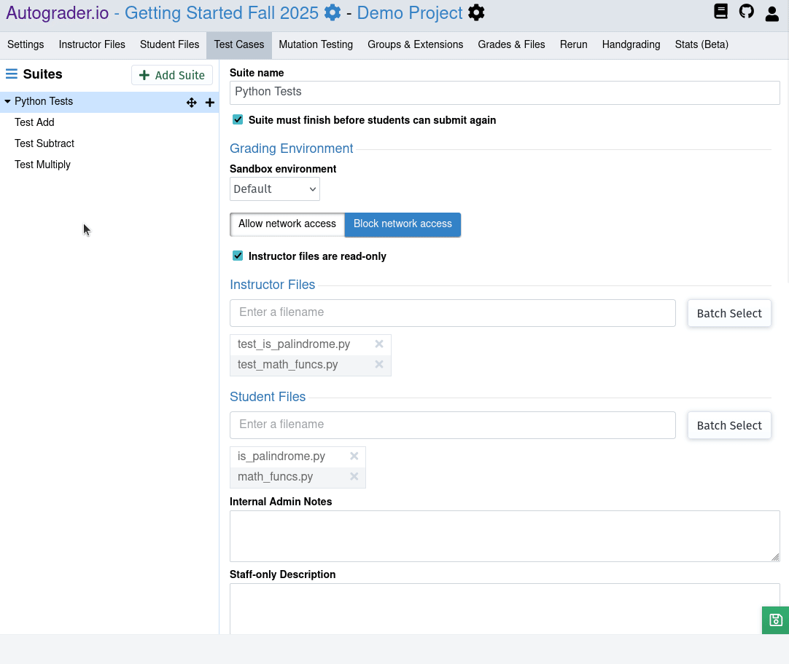
Go back to the submission page and submit math_funcs.py and
is_palindrome.py. You should two tests passing, one failing, and the latest
test with partial points. Click on the “Test Is Palindrome” test case and
you should see the actual stdout output, but when we switch to “Normal”
from the “Adjust Feedback” dropdown menu you’ll see that this is hidden from
students.
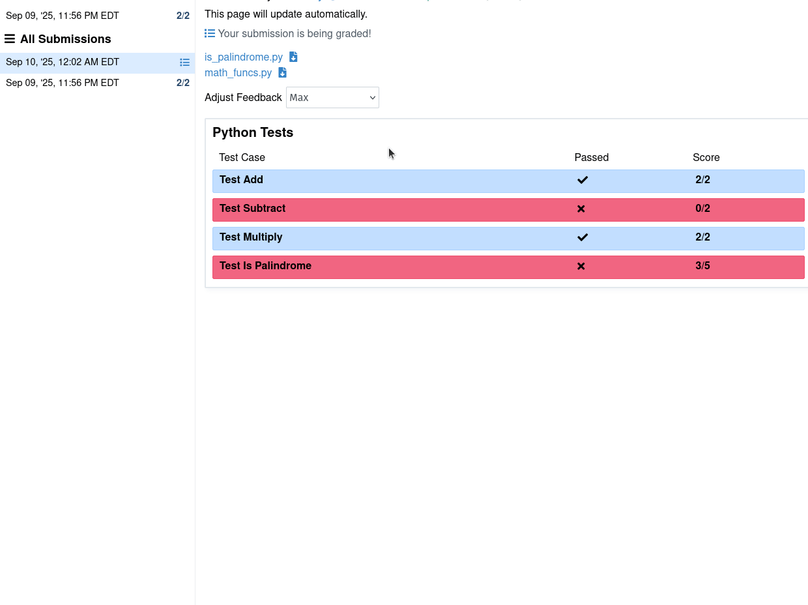
Fix the bugs in math_funcs.py and is_palindrome.py, submit again, and
you should see all four tests pass. We now have a fully-working suite of Python
unit tests!
Create a Test Suite with C++ Output Tests
In this section, we’ll configure a suite of tests for a C++ program that reads
from cin and prints words back to cout. This section assumes you have
read Create a Test Suite with Python Unit Tests.
Create and Configure the Test Suite
In the project admin page, create a new suite and call it “C++ Tests.” Leave
the list of necessary instructor files blank, and select
student_solution.cpp from the list of student files. Scroll down to the
“Setup” section and set the “Setup command label” input to “Compile” and the
“Setup command” input to g++ student_solution.cpp -o student_solution.exe.
Then scroll down and click the “Save” button at the bottom of the page.
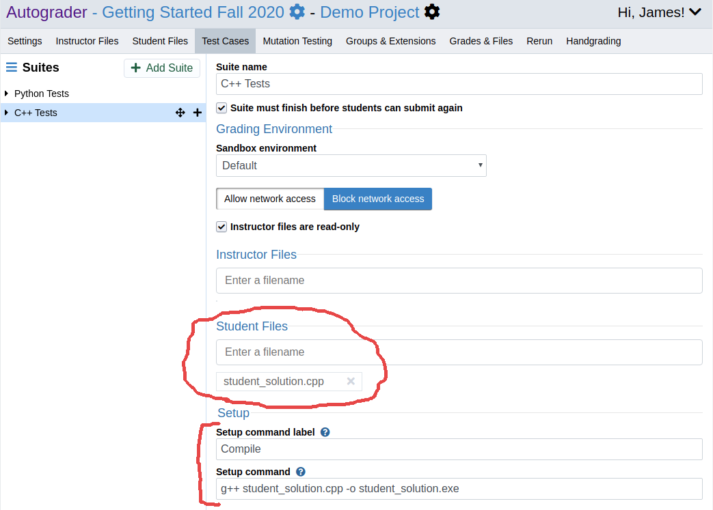
Why don’t we select the ``.in`` and ``.correct`` files in the “Instructor Files” list? Autograder.io provides a mechanism for redirecting input from and directly comparing output to an instructor file without ever putting those files in the same environment as the student code. For the input files, this is mostly a convenience, but for the correct output files, this greatly reduces the risk of student code gaming your test cases. Since the student code never sees the correct output file, it can’t try to read from the file, print its contents and vacuously pass the test case.
Create the Test Cases
Create a new test case and call it “Print words test 1”. Set the “Command”
input text to ./student_solution.exe.
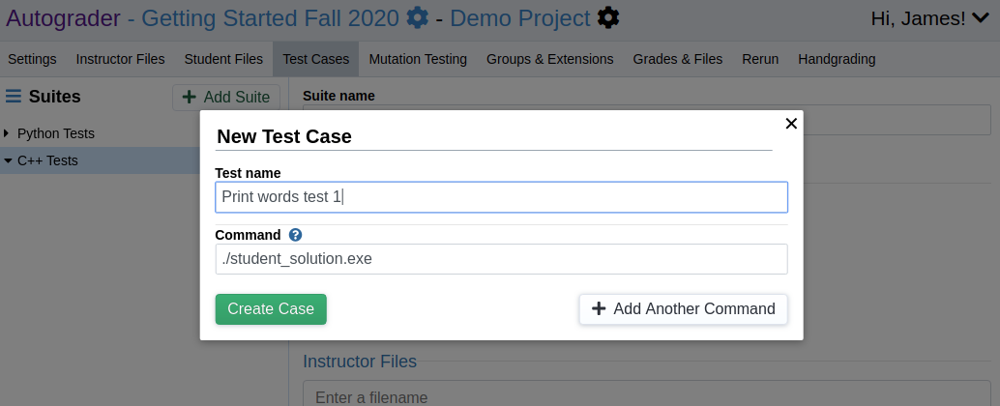
Then edit the following settings and click the save button:
Stdin source: Instructor file content
File: print_words_test_1.in
Stdout -> Check stdout against: Instructor file content
File: print_words_test_1.correct
Correct stdout: 3 points
Feedback -> Normal -> Preset: Pass/Fail
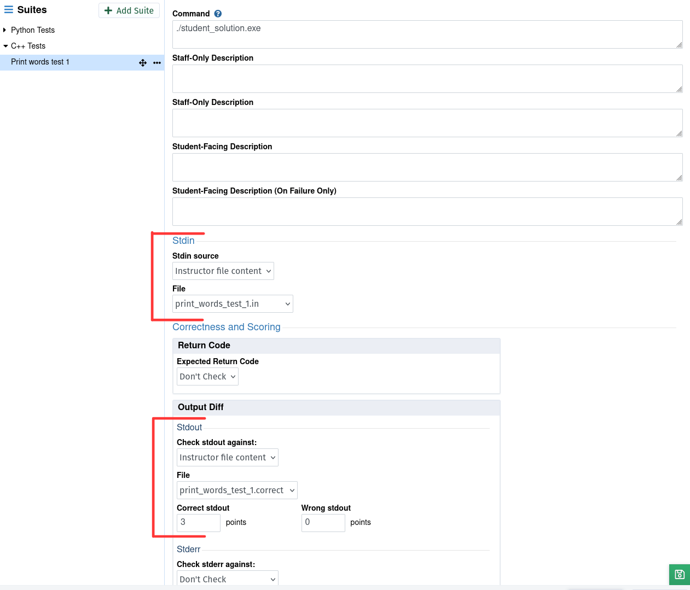
Head over to the submission page once more, but this time submit
student_solution.cpp. We should see our new test case pass and everything
else fail.
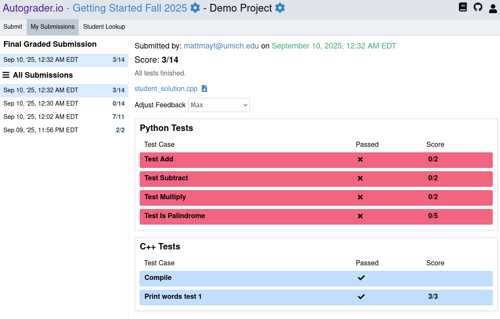
Make a clone of “Print words test 1” and call it “Print words test 2”. Change the “Stdin” file to “print_words_test_2.in” and the “Stdout” file to “print_words_test_2.correct”.
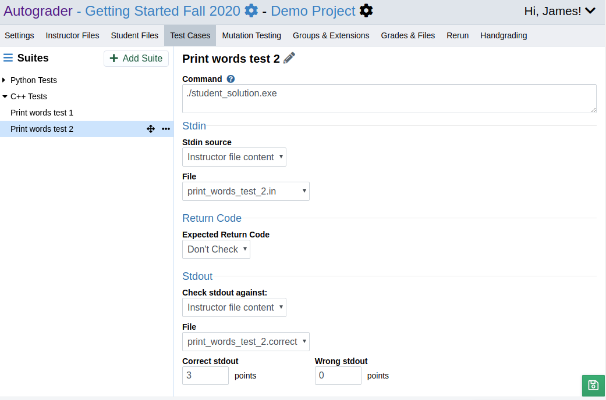
Click the save button and make another submission. The new test should fail because of a bug in the code. Scroll down and expand the “Print words test 2” panel to see a diff of the expected and actual output.
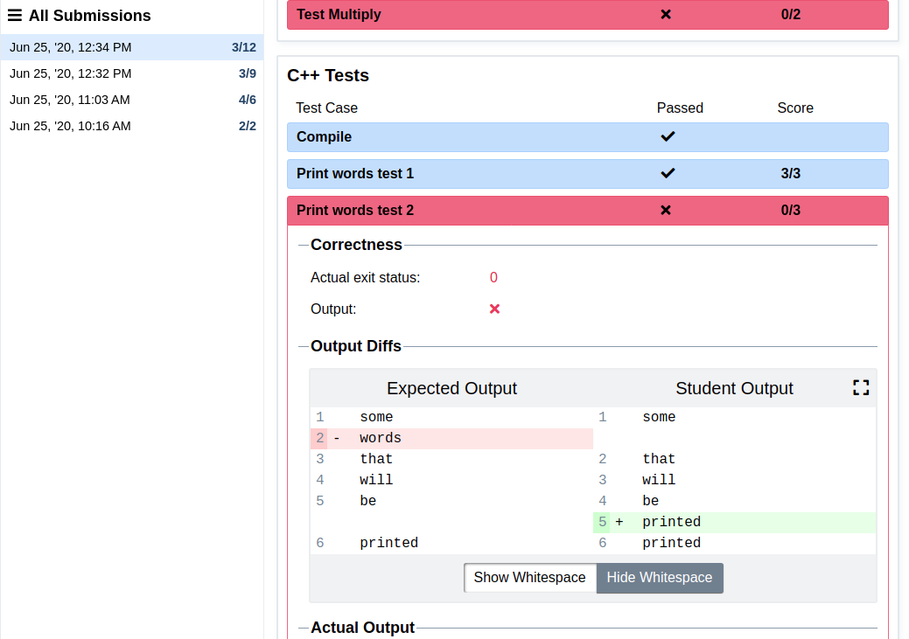
Although we want to see these output diffs as instructors, we don’t necessarily want to show that much information to students. Scroll up and change the “Adjust Feedback” dropdown to “Normal” to verify that the diff is hidden from students.
Finally, fix the bug in student_solution.cpp, submit math_funcs.py,
is_palindrome.py, and student_solution.cpp, and see all the tests pass!